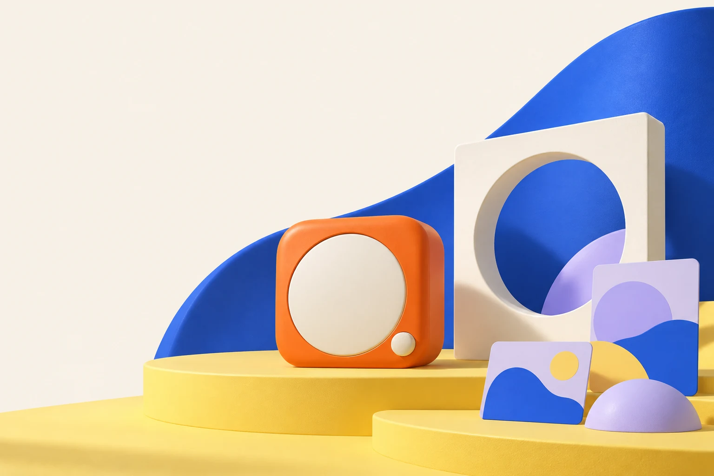

联野 / 一次合作01
品牌提供 · 联野一起梳理
先把产品
说清楚。
✓ 产品阶段与确认过的事实
✓ 谁会需要，买家会问什么
✓ 样机、交付与服务条件
留下：产品与需求简报↗

产品事实和适用场景，是第一次介绍的起点。
原创样机与场景示意 · 首批合作验证阶段
产品在变，进入市场的路也可以不一样。
联野帮助创新产品品牌找到合适的经营者，准备介绍与体验，推进首次合作。
品牌原则上直接成交与履约，我们把中间需要有人做的事接起来。
01 / 找到适合开始的地方
有人看一次实测，有人听同行聊聊，
有人需要亲手试过。起点取决于买家。

示意记录 · 不是已完成的合作结果
↗从产品事实开始，创作者组织独立表达，购买咨询有明确的下一站。
合作形式 / 可以跨路径组合
用一段明确的时间、一个主题和可上手的样机，集中听到真实问题。场地、接待、样机与品牌答疑事先约定。
场景及动作是预设示意，不是客户案例；形式、人员、授权、费用和承接方式需合作前约定。
02 / 把购买理由，变成可以判断的东西
软件看能否进入工作流，硬件看实际使用。
不同的疑问，需要不同的体验。
 还没导入自己的素材
还没导入自己的素材软件 / 实际工作流
让创作者或社群成员带上自己的内容，完成一次从输入到输出的任务。演示很顺，不等于真正适合。
无品牌产品与软件界面均为示意。上方时间线只演示试用步骤，不运行真实 AI、不生成内容，也不证明产品效果。
03 / 从通路类型，深入具体经营者
找到一个名字只是开始。
还要看业务、受众、体验条件与进入方式。
没有找到对应参考。试试其他关键词或清除筛选。
每一个入口，都需要具体了解，再谈合作。
这些是公开市场研究资料，包含不同经营角色，不是联野客户、签约伙伴或可直接调用的网络。历史来源未在本轮逐项重新核验；业务、准入与合作条件以实际确认结果为准。点开名称，可查资料与来源。
04 / 联野把哪些事接起来
产品资料、体验安排、品牌入口、结果记录。
每件事，都要说清谁来做。
品牌提供 · 联野一起梳理
✓ 产品阶段与确认过的事实
✓ 谁会需要，买家会问什么
✓ 样机、交付与服务条件
咨询 · 成交 · 履约 · 售后
品牌提供样机和已经确认的事实，联野协助梳理使用场景；Demo 阶段先验证需求，具备交付条件后再讨论首销。
场景建议、买家问题、介绍与体验提纲。
伙伴沟通、体验安排、责任与费用条件。
需求、成交和投入，决定继续、调整或停止。
AI 可辅助资料整理、场景比较与材料准备；事实由人确认，合作由人推进。实际收费、销售成绩、AI 效率和可复制增长仍需真实项目验证。
给产品品牌
你带上产品与事实，
我们一起准备进入市场的第一步。
给销售伙伴
找到适合经营的新品，
提前说清品牌支持、服务责任与收益条件。
合作之前，把几件事讲明白
目前处于首批合作验证阶段，可以从一款产品、一个具体需求场景开始讨论。Demo 阶段优先验证需求和体验；具备实际交付与服务条件后，再约定首销。没有已经验证的销量、收益或网络效果保证。
品牌原则上负责成交、供货、履约与售后，并确认产品事实。伙伴围绕其实际受众与经营场景组织介绍或体验。联野推进资料、安排和沟通，具体责任、授权与费用在合作前约定。
按实际服务范围约定服务费；涉及成交或增量价值时，事先明确归因、退款、费用上限和结算周期。目前没有经过验证的统一价格、销量或收益保证。
不是。图谱是有来源的公开市场研究，不能证明新品准入、品牌授权、可触达人数或成交效果。每条资料标有来源与历史研究日期，合作需要另行确认。
AI 用于辅助资料整理、场景比较和材料准备。网站中的三维样机、软件时间线和过程是预设演示，不运行真实产品推理，也不证明业务能力或效率增量。
从一款产品，一个真实场景开始
第一次沟通，带上这三件事：